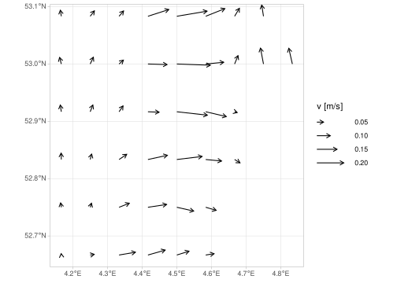
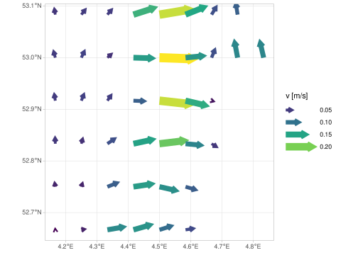

A vector has a radius (i.e., length) and an angle (direction). When
you depict a vector field, the radius often has a specific meaning: it
reflects a certain magnitude. For instance, a vector can represent the
magnitude and direction of a velocity. It could help your audience to
read your plot if they knew which magnitudes the length of the arrows in
your plot represent. This is why ggfields provides a legend
key for the radius aesthetic specified with
ggplot2::aes().
In order to provide a frame of reference, you need to specify
max_radius in your call to geom_fields()
(default is 0.5 cm). This max_radius should have a absolute
or relative length unit (grid::unit()). Arrows in your
vector field will be scaled between zero and this
max_radius. This same max_radius is also used
to scale arrows in your legend keys.
Note that the axes are not trained on the size of the vectors (only
on the vector origins). You need to expand your x and y scales manually
if vectors are cut off. Also if the max_radius is larger
than the key width, you may run into visual problems. For large
max_radius values you have to increase the key width
manually, as shown in the example below.
library(ggplot2)
library(ggfields)
library(stars)
theme_set(theme_light())
data("seawatervelocity")
p <-
ggplot() +
geom_fields(
aes(radius = as.numeric(v),
angle = as.numeric(angle)),
seawatervelocity[,3:11,6:11],
max_radius = grid::unit(1.5, "cm")) +
labs(radius = "v [m/s]") +
## We have to increase the 'keywidth' as otherwise `max_radius` won't fit:
guides(radius = guide_legend(keywidth = grid::unit(1.5, "cm")))
p
It is important that the radius you wish to plot has only
non-negative values. This is because it is impossible to distinguish
between a vector with a negative magnitude and a vector with the same
positive magnitude with an angle rotate 180 degrees (i.e, a vector with
radius = 1 and and angle = 0 will look the
same as a vector with radius = -1 and
angle = pi). Therefore, from the plot, you cannot tell
which vectors have a positive and which have a negative value. This is
why geom_fields() will throw an error if you try to plot
negative radii.
This is also why you need to be careful with transformations. Although, it is technically possible to log-transform your radii, you might run into problems due to potentially resulting negative values. You should also wonder whether transformed values accurately convey information about the magnitude of your vectors. If you are considering to apply transformations, try using binned or discrete scales instead.
The radius key in the guide legend can be combined into
one key with many other aesthetics, such as colour,
linewidth, linetype, etc. All you have to do
is make sure that all aesthetics use are assigned to the same variable
and use ggplot2::guide_legend(). The example below
illustrates how colour and linewidth can be
combined with radius in one legend.
p +
aes(col = as.numeric(v), linewidth = as.numeric(v)) +
## Let's give the aesthetics all the same name
labs(col = "v [m/s]", linewidth = "v [m/s]") +
## Make sure that the colour aesthetic uses the same guide as radius ("legend")
scale_colour_viridis_c(guide = "legend") +
## Make sure all keys have the same width
guides(colour = guide_legend(keywidth = grid::unit(1.5, "cm")),
linewidth = guide_legend(keywidth = grid::unit(1.5, "cm")))
What if you only have the x and y component of a vector instead of
its angle and radius? Can you provide those components as aesthetics to
geom_fields()? Unfortunately, the answer is no. At least
not directly, as radius is required early on in the data
wrangling machinery of ggplot2::ggplot(). However, the x
and y components of a vector can easily be converted into its angle and
radius, as shown in the example below.
ggplot() +
geom_fields(aes(radius = as.numeric(pythagoras(vo, uo)),
angle = atan2(as.numeric(vo), as.numeric(uo))),
seawatervelocity)